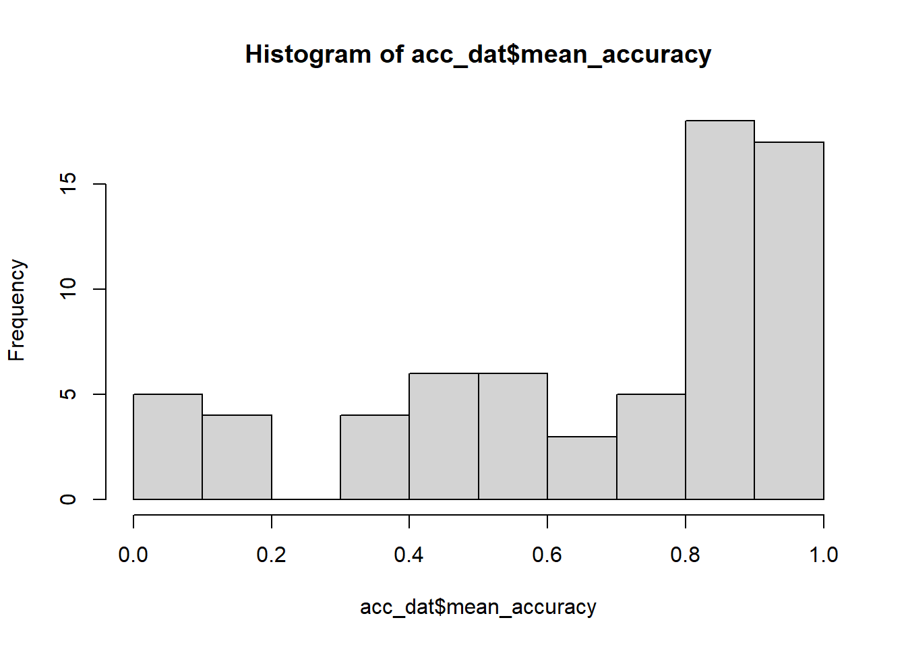
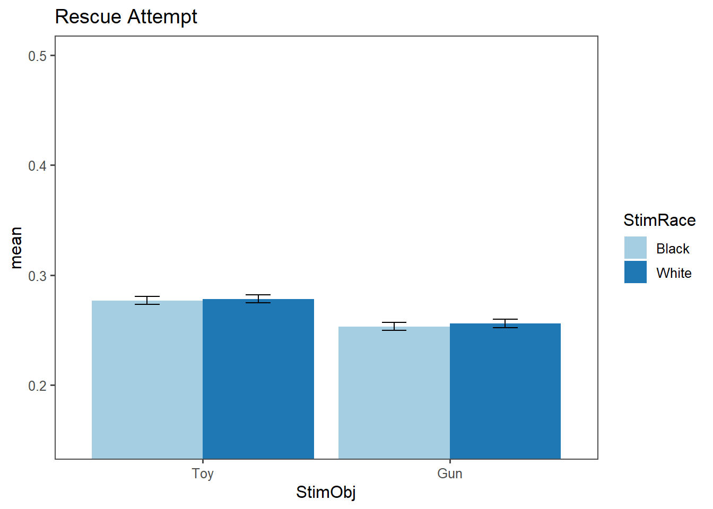
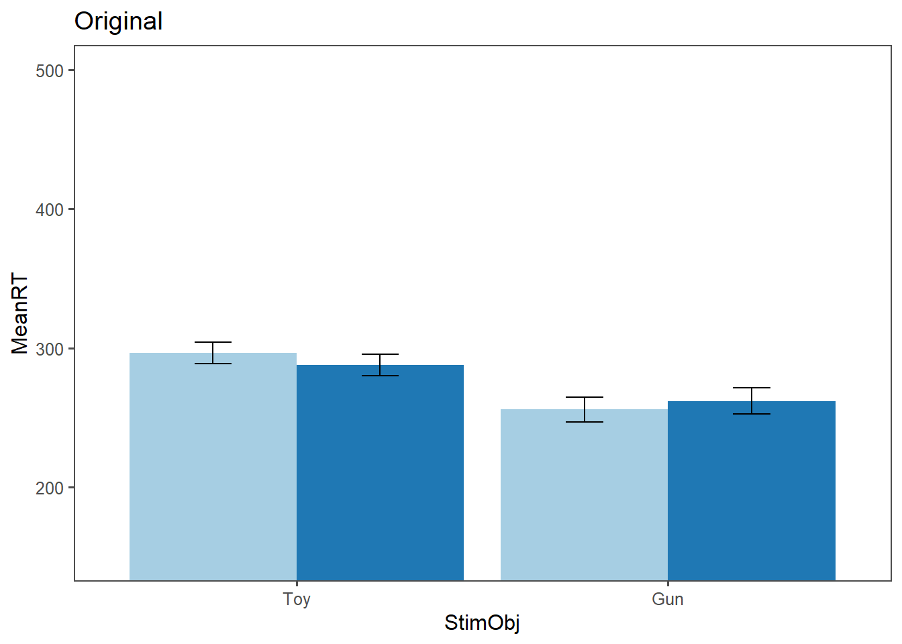
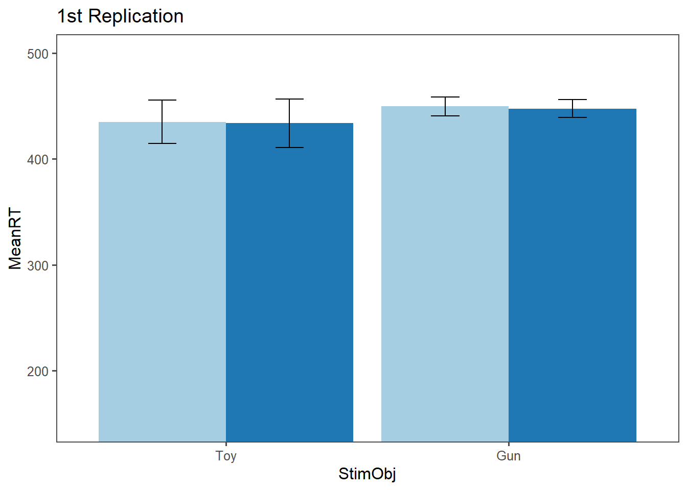
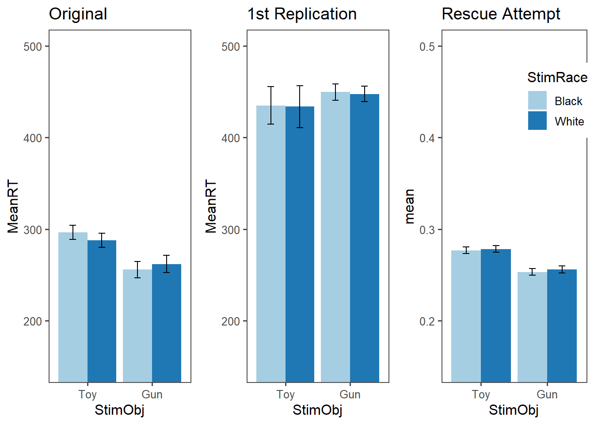
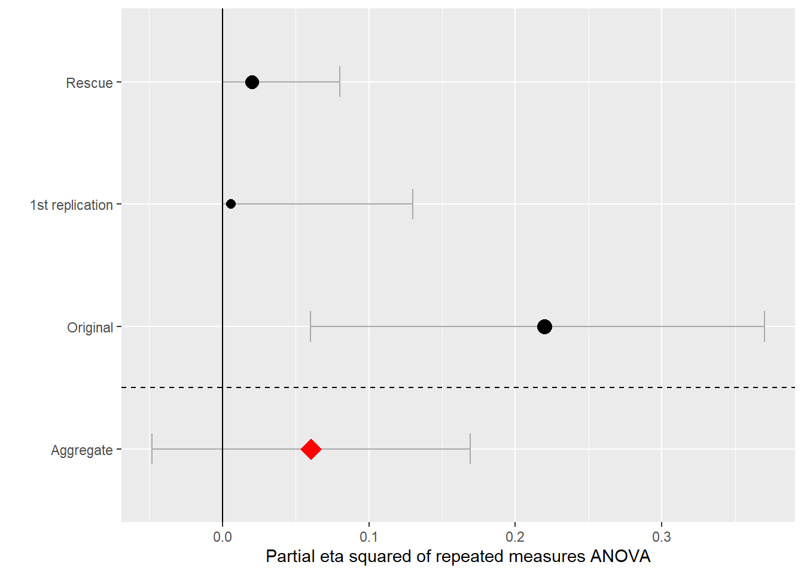

1- pbinom(0.6*144, 144, 0.5)[1] 0.007685257The present project aims to rescue the replication of Experiment 1 of Todd et al. (2016, Psychological Science), which used photos of Black and White boys as primes for the categorization of objects (gun vs. toy) in a reaction time experiment. This experiment contributed to the literature on the perceptual basis of racism and stereotyping.
Specifically, the rescue will focus on attempting to replicate the results of an interaction of prime of race and speed of object categorization. For that, access to the stimuli utilized in the experiment (i.e., images of faces of boys and a set of images of objects to be categorized) was needed. In addition, the experiment was programmed in PsychoPy.
Challenges involved recreating the experimental paradigm in line with the original and analyzing the data using the same statistical techniques. Adding other controls to guarantee the high quality of the experiment (e.g., exclusion criteria) was also challenging.
The prior replication attempt had a substantially smaller sample size (effective N=26) than the original study (N=63). This decision was based on a a priori power analysis indicating a sample size of N = 24 for 95% power. Additionally, the original study was conducted in an in-person lab setting, while the replication attempt was conducted online using Mechanical Turk. All other relevant criteria seem to be equal or comparable to the original study.
“White participants completed sequential priming tasks in which they categorized threatening and non-threatening objects (toys and guns) and words after brief presentations of Black and White children’s faces.”
The present rescue attempt will keep the same methodological paradigm and recode the original experiment in PsychoPy. Additionally, this rescue attempt will collect data online using Prolific as opposed to Mechanical Turk.
The original effect size was ηp2 = .22 which translates into an effect size of 0.53. Power analysis shows that I need 16 participants for 80% power, 20 for 90%, and 24 for 95% power. This effect size is for the 2 (race of prime: Black, White) × 2 (target object: gun, toy) repeated measures analysis of variance (ANOVA). Attaining this number of participants is easily feasible with Prolific.
Considering the initial replication attempt failed to find an effect, I will propose a sample closer to the original sample of the study, aiming for effective N = 60. According to G*Power, a sample of N = 60 would have a power of near 1 to find the original effect size.
A sensitivity power analysis with G*Power revealed that, with 60 participants, this experiment has 80% power to detect an effect size as small as 0.07.
We will recruit 66 participants to be close to the N of the original study. We added 6, which is 10% of 60 to ensure we will still have enough participants after the exclusion criteria. We will exclude non-White participants in the analysis. We will also exclude participants who have less than 60% level of accuracy. The original study excluded based on 50% accuracy or lower (chance-level), meaning that a participant who guesses every single trial might still have a reasonable chance of not being excluded. The chance of a participant reaching 60% accuracy over 144 trials is:
1- pbinom(0.6*144, 144, 0.5)[1] 0.007685257“The primes were 12 photos of boys (6 Black, 6 White) taken from the Child Affective Facial Expression set (LoBue & Thrasher, 2015). We selected these photos using the following criteria: The faces had to be easily categorized by race, to have a neutral expression, to have no idiosyncrasies (e.g., facial scars), and to be similar in actual age (mean age for Black faces = 4.98 years; mean age for White faces = 5.01 years; p > .250). Each photo was cropped so that it included only the head and was standardized in size. The target objects were 6 gun images taken from Payne (2001) and 6 toy images (e.g., a rattle) taken from online sources. The toy images were converted to grayscale and sized to match the gun images.”
Instead of beginning with a blank screen (500 ms) like in the original article, we began with a screen that instructed participants to “Press the spacebar to continue” after each trial. The rest of the procedures were the same. After feedback from the original author, we edited visual features of the experimental paradigm to the best of our ability to match the original experiment.
“Each trial sequence began [..] followed by a face prime (200 ms), then a target object (200 ms), and finally a pattern mask (which remained on screen until participants responded). If participants did not respond within 500 ms, a message (“Please respond faster!”) appeared for 1 s. Each of the 12 face primes was paired once with each of the 12 target objects, which resulted in 144 randomly ordered experimental trials. Eight practice trials preceded the experimental trials.”
This replication included 12 practice trials instead of 8.
Additionally, following the recommendation in a commentary in the previous replication attempt report, we will include a cover page for the study, as recommended by the author: “This task is investigating object recognition under distracting conditions. You will be asked to quickly identify objects will being distracted by other stimuli.”
The experiment already contains built-in attention checks as it alerts the participant to pay attention if they are too slow to react to the image. Additionally, the rescue replication will exclude participants with less than 60% accuracy rate, virtually eliminating participants who do not complete the experiment in good faith. We will also exclude non-white participants, as did the original study and the 1st replication attempt.
“Before analysis, we excluded errors and RTs less than 100 ms. RTs exceeding the 500-ms deadline were excluded from analyses, and responses on those trials were treated as errors. We then subjected the remaining RTs to a log transformation (Payne, 2001); however, for interpretive ease, we report raw RTs. A 2 (race of prime: Black, White) × 2 (target object: gun, toy) repeated measures analysis of variance (ANOVA) revealed a significant interaction.” The key test will be the interaction effect of this 2 X 2 ANOVA.
We will only analyze data from people who indicated their race as White.
In the original paper, a repeated measures ANOVA yielded the following results: “A 2 (race of prime: Black, White) × 2 (target object: gun, toy) repeated measures analysis of variance (ANOVA) revealed a significant interaction, F(1, 62) = 17.21, p < .001, ηp2 = .22.”
In the first replication attempt, results of the same analysis were as follows: “One-way repeated-measures analysis of variance (ANOVA) revealed no significant interaction effect of condition on reaction times: F(1, 23) = 1.3, p = .27.”
The only difference between the original study and the replication attempt in terms of procedure is that the replication attempt was made online and the original experiment was conducted in-person.
The present rescue attempt is going to try to get closer to the original study by aiming at a sample size closer to the original. Additionally, this rescue will use Prolific as opposed to MTurk. Since evidence has shown that Profilic consistently delivers higher quality data, the differences to an in-person setting could be further reduced. We will also raise the chance-exclusion cut-off to 60%.
No difference in claims is expected to occur from the original study.
We collected data from 71 Prolific participants. We excluded 2 participants for being non-white and 12 participants due to accuracy rates compatible with chance. An additional 4 participants were excluded passively for not having valid data (i.e., people that clicked on the experiment but did not follow through with it). The effective sample size was N=53.
Adjustments were made in exclusion criteria based on error in experimental paradigm. See below for more details.
Data was imported and wrangled into a tidy format, renaming variables for better interpretability. Categorical variables were factored and relabeled. Loading libraries
### Load Relevant Libraries and Functions
library(tidyverse)
#install.packages("rstatix")
library(rstatix)Warning: package 'rstatix' was built under R version 4.2.3library(ggplot2)
#install.packages("ggpubr")
library(ggpubr)Warning: package 'ggpubr' was built under R version 4.2.3library(lme4)
#install.packages("ez")
library(ez)Warning: package 'ez' was built under R version 4.2.3library(ggthemes)Warning: package 'ggthemes' was built under R version 4.2.3#install.packages("reghelper")
library(reghelper)Warning: package 'reghelper' was built under R version 4.2.3Importing data
dir_path <- "C:/Users/mateu/OneDrive/Desktop/Stanford/01_Fall 2023/Psych Exp Methods/data_prolific"
csv_files <- list.files(dir_path, pattern = "2023-12.*\\.csv$", full.names = TRUE)
combined_data <- data.frame()
for (file in csv_files) {
data <- read_csv(file)
combined_data <- bind_rows(combined_data, data)
}
# Storing raw data so I don't have to run this loop all the time
combined_data_raw <- combined_dataHow many participants in the dataset?
t1 <- table(combined_data$participant)
nrow(t1)[1] 71# OBS: this includes people who did not finish the experiment#Are there non-whites?
table(combined_data$key_resp_race_check.keys)
a o w
1 1 65 non_whites <- combined_data %>%
select(participant, key_resp_race_check.keys) %>%
filter(key_resp_race_check.keys == "a"| key_resp_race_check.keys =="o")
non_whites participant key_resp_race_check.keys
1 5a09f54af2e3460001edb286 a
2 63d9e1f02776bb4b5cd8e5e1 oprocessed_dat <- combined_data %>%
#filtering non-whites
filter(!(participant == "5a09f54af2e3460001edb286" | participant == "63d9e1f02776bb4b5cd8e5e1"))
# N check
t2 <- table(processed_dat$participant)
nrow(t2)[1] 69processed_dat <- processed_dat %>%
mutate(
ID = participant,
StimRace = ifelse(grepl("w", face), "White", "Black"),
StimObj = ifelse(grepl("g", object), "Gun", "Toy"),
ReactionTime = key_resp.rt,
LogRT = log(key_resp.rt),
Correct = ifelse(StimObj == "Gun" & key_resp.keys == "p" | StimObj == "Toy" & key_resp.keys == "q" ,1, 0),
too_slow = ifelse(is.na(too_slow_resp.keys), FALSE, TRUE)
) %>%
mutate(Correct = ifelse(too_slow == T, 0, Correct )) %>%
filter(!(is.na(Correct))|too_slow == T) %>%
select(c(ID, StimRace, StimObj, ReactionTime, LogRT, Correct, too_slow))
# N check
t3 <- table(processed_dat$ID)
nrow(t3)[1] 68An additional passive exclusion, probably due to there not being valid data points.
# Checking accuracy
acc_dat <- processed_dat %>%
group_by(ID) %>%
summarise(mean_accuracy = mean(Correct))
acc_dat# A tibble: 68 × 2
ID mean_accuracy
<chr> <dbl>
1 558af5a1fdf99b7dfdbac177 0.846
2 55a1c40afdf99b1c400b549b 0.483
3 581649f0b434f0000184d2a9 0.902
4 5a08ddd0df3fa800015c36ac 0.0556
5 5af135b75bbd0b00015ec3a7 0.860
6 5bb9cca600312000015713d8 0.972
7 5cd34d42fe890a00174debb5 0.895
8 5d4cfad0438eea001b5ddf90 0.839
9 5decaac46e09cf3792805023 0.161
10 5e126c25a98a7a8fab258f14 0.909
# … with 58 more rowsSo there is an important issue here that must be addressed. Only ONE prolific participant noted this in the comments, but, in fact, the very first instruction in my experiment had the directions to place finger on the TOY (Q) and GUN (P) buttons INVERTED. Even though it seems from the data that most participants got the keys correctly from the reminder frames, there are many participants who have extremely low accuracy means that are extremely unlikely to have happened due to chance. Most likely, these participants were following the first instructions and thus actually got a high accuracy rate. Here is a simple histogram with the mean accuracy scores:
hist(acc_dat$mean_accuracy)
From the histogram, it seems that there is a mode between 0.4 and 0.6 which most likely consists of people who were just randomly pressing keys. To address this issue, I propose excluding participants only if their accuracy rate is likely to be due to chance. For that, I will follow the procedure outlined in the report before data collection, incorporating data from this histogram.
Previously, I had excluded participants with an accuracy rate below 60%. According to my calculations, the chances that a participant would have higher than 60% accuracy if they were randomly pressing keys over 144 trials is:
1- pbinom(0.6*144, 144, 0.5)[1] 0.007685257Accordingly, I will keep participants with an accuracy level below 40%. The probability of participants having less than 40% accuracy if they were randomly pressing keys is:
pbinom(0.4*144, 144, 0.5)[1] 0.007685257# How many are there in this realm?
acc_dat %>%
filter(mean_accuracy < 0.4)# A tibble: 13 × 2
ID mean_accuracy
<chr> <dbl>
1 5a08ddd0df3fa800015c36ac 0.0556
2 5decaac46e09cf3792805023 0.161
3 5f218ec7604e35564a7ea1ea 0
4 5f5550685e8dec926f63cef1 0.0225
5 5fc341fc7f43d26031d24129 0.378
6 5febf3346a3657d4aca47a2f 0.0420
7 60be9f464ad56ccf68bc2342 0.0280
8 60c8467d9872c0d83f695499 0.189
9 61006ef97b3147b00cccf8cd 0.357
10 6314d97aa02af651ea1a9591 0.357
11 63403b47287756c1978d2985 0.385
12 63e54fcecdb4c6a676593d42 0.168
13 6530fed5b3281d288757fca9 0.189 13 participants have accuracy rates below 40%.
OBS: If, for example, some participants completed the first half of the experiment in good faith (~80% accuracy) and randomly pressed buttons for the second half of the experiment (~50% accuracy), this person would have an expected accuracy of ~67% and would thus not be excluded.
# guessing + in good faith
(qbinom(0.60, 72, 0.5) + qbinom(0.60, 72, 0.8))/144[1] 0.6666667Excluding participants due to high likelihood of being guessing:
exclude_list <- acc_dat %>%
filter(mean_accuracy < 0.6 & mean_accuracy > 0.4) %>%
select(-c(mean_accuracy))
exclude_list <- c(exclude_list$ID) # N = 12 people
processed_dat <- processed_dat %>%
filter(!(ID %in% exclude_list))
# N check
t3 <- table(processed_dat$ID)
nrow(t3)[1] 562 people were excluded based on not meeting screener criteria (e.g., identifying as White). An additional 12 people were excluded due to accuracy rates compatible with chance level (between 40% and 60%).
Before continuing, we must recode the “Correct” variable for participants for whom we assume the mean accuracy is incorrect due to inverted instructions:
# Creating list
invert_list <- acc_dat %>%
filter(mean_accuracy < 0.4) %>%
select(-c(mean_accuracy))
invert_list <- c(invert_list$ID)
# Applying
processed_dat <- processed_dat %>%
mutate( Correct = ifelse(ID %in% invert_list, 1-Correct, Correct) )Filtering responses that were too slow or too fast
processed_dat <- processed_dat %>%
filter(ReactionTime > 0.1 & too_slow == F)
# N check
t4 <- table(processed_dat$ID)
nrow(t4)[1] 53A repeated measures ANOVA will be computed to probe for the significance of the Race of Prime X Object Classification interaction. RT logs will be used as per the original study and replication attempt. Box plots were generated for visualization. Additionally, bar plots with with 95% error bars were computed using ggplot2.
# Turning into factors for ANOVA
processed_dat$ID <- as_factor(processed_dat$ID)
processed_dat$StimRace <- as_factor(processed_dat$StimRace)
processed_dat$StimObj <- as_factor(processed_dat$StimObj)
#Looking at summarized data
sum_dat <- processed_dat %>%
filter(Correct == 1) %>%
group_by(StimRace, StimObj, ID) %>%
get_summary_stats(LogRT, type = "mean_sd")
sum_dat# A tibble: 210 × 7
ID StimRace StimObj variable n mean sd
<fct> <fct> <fct> <fct> <dbl> <dbl> <dbl>
1 558af5a1fdf99b7dfdbac177 Black Toy LogRT 32 -1.20 0.234
2 581649f0b434f0000184d2a9 Black Toy LogRT 35 -1.26 0.232
3 5a08ddd0df3fa800015c36ac Black Toy LogRT 12 -1.08 0.17
4 5af135b75bbd0b00015ec3a7 Black Toy LogRT 31 -1.25 0.18
5 5bb9cca600312000015713d8 Black Toy LogRT 36 -1.06 0.137
6 5cd34d42fe890a00174debb5 Black Toy LogRT 34 -1.16 0.197
7 5d4cfad0438eea001b5ddf90 Black Toy LogRT 31 -1.20 0.189
8 5decaac46e09cf3792805023 Black Toy LogRT 24 -1.33 0.327
9 5e126c25a98a7a8fab258f14 Black Toy LogRT 34 -1.17 0.187
10 5e3a821036cd5e28f05fa245 Black Toy LogRT 30 -1.09 0.237
# … with 200 more rows#Barplot with CI bars
sum_dat_plot <- processed_dat %>%
filter(Correct == 1) %>%
group_by(StimObj, StimRace) %>%
summarise(
n=n(),
mean=mean(ReactionTime),
sd=sd(ReactionTime)
) %>%
mutate( se=sd/sqrt(n)) %>%
mutate( ci=se * qt((1-0.05)/2 + .5, n-1))`summarise()` has grouped output by 'StimObj'. You can override using the
`.groups` argument.barplot_rescue <- sum_dat_plot %>%
ggplot(aes(x=StimObj, y=mean, fill=StimRace)) +
geom_bar(stat = "identity", position=position_dodge()) +
geom_errorbar(aes(ymin=mean-ci, ymax=mean+ci), width=.2,
position=position_dodge(.9)) +
ggthemes::theme_few() +
coord_cartesian( ylim = c(0.15, 0.5)) +
scale_fill_brewer(palette="Paired") +
ggtitle( "Rescue Attempt" )
barplot_rescue
Running 2x2 repeated measures ANOVA
# ANOVA was not working due to one infinite value, so deleting this value
processed_dat <- processed_dat %>%
filter(Correct == 1) %>%
filter(is.finite(LogRT))
aov_model <- aov( data = processed_dat,
LogRT ~ StimObj*StimRace + Error(ID/(StimObj*StimRace)))Warning in aov(data = processed_dat, LogRT ~ StimObj * StimRace +
Error(ID/(StimObj * : Error() model is singularsummary(aov_model)
Error: ID
Df Sum Sq Mean Sq F value Pr(>F)
StimObj 1 11.34 11.337 4.849 0.0324 *
StimRace 1 2.01 2.007 0.858 0.3588
StimObj:StimRace 1 1.83 1.827 0.781 0.3811
Residuals 49 114.55 2.338
---
Signif. codes: 0 '***' 0.001 '**' 0.01 '*' 0.05 '.' 0.1 ' ' 1
Error: ID:StimObj
Df Sum Sq Mean Sq F value Pr(>F)
StimObj 1 14.873 14.873 88.045 1.59e-12 ***
StimRace 1 0.100 0.100 0.593 0.445
StimObj:StimRace 1 0.150 0.150 0.889 0.350
Residuals 49 8.277 0.169
---
Signif. codes: 0 '***' 0.001 '**' 0.01 '*' 0.05 '.' 0.1 ' ' 1
Error: ID:StimRace
Df Sum Sq Mean Sq F value Pr(>F)
StimRace 1 0.096 0.09625 1.363 0.248
StimObj:StimRace 1 0.095 0.09510 1.347 0.251
Residuals 51 3.601 0.07061
Error: ID:StimObj:StimRace
Df Sum Sq Mean Sq F value Pr(>F)
StimObj:StimRace 1 0.011 0.01065 0.138 0.711
Residuals 51 3.924 0.07694
Error: Within
Df Sum Sq Mean Sq F value Pr(>F)
Residuals 5761 348.7 0.06053 No significant interaction from the ANOVA model. R did give a few warning such as Error() model is singular and design might be unbalanced. That was expected as ANOVA is most likely not the correct way to handle this data. For that reason, we will proceed with a mixed-effects model:
# Consider this model
lmm <- lmerTest::lmer( data = processed_dat,
LogRT ~ StimObj*StimRace + (1|ID))
summary(lmm)Linear mixed model fit by REML. t-tests use Satterthwaite's method [
lmerModLmerTest]
Formula: LogRT ~ StimObj * StimRace + (1 | ID)
Data: processed_dat
REML criterion at convergence: 544.4
Scaled residuals:
Min 1Q Median 3Q Max
-4.0334 -0.6160 0.0359 0.6472 4.0764
Random effects:
Groups Name Variance Std.Dev.
ID (Intercept) 0.02789 0.1670
Residual 0.06170 0.2484
Number of obs: 5971, groups: ID, 53
Fixed effects:
Estimate Std. Error df t value Pr(>|t|)
(Intercept) -1.339e+00 2.385e-02 5.647e+01 -56.126 <2e-16 ***
StimObjGun -1.023e-01 9.157e-03 5.917e+03 -11.168 <2e-16 ***
StimRaceWhite 5.349e-03 8.972e-03 5.914e+03 0.596 0.551
StimObjGun:StimRaceWhite 4.542e-03 1.288e-02 5.914e+03 0.353 0.724
---
Signif. codes: 0 '***' 0.001 '**' 0.01 '*' 0.05 '.' 0.1 ' ' 1
Correlation of Fixed Effects:
(Intr) StmObG StmRcW
StimObjGun -0.187
StimRaceWht -0.192 0.500
StmObjG:SRW 0.133 -0.709 -0.697Similarly, the interaction is not significant here.
THe original study does not have a plot, so I am creating one based on table results
# Computing data from table in original paper
data_barplot_original <- tibble(
MeanRT = c(296.6, 287.7, 255.8, 261.9),
sd = c(30.7, 30.7, 35.0, 37.4 ),
n = c(63, 63, 63, 63),
StimRace = c("Black", "White", "Black", "White"),
StimObj = c( "Toy", "Toy", "Gun", "Gun"),
se=sd/sqrt(n),
ci=se * qt((1-0.05)/2 + .5, n-1))
# Creating barplot
barplot_original <- data_barplot_original %>%
ggplot(aes(x=StimObj, y=MeanRT, fill=StimRace)) +
guides(fill = F) +
geom_bar(stat = "identity", position=position_dodge()) +
geom_errorbar(aes(ymin=MeanRT-ci, ymax=MeanRT+ci), width=.2,
position=position_dodge(.9)) +
ggthemes::theme_few() +
coord_cartesian( ylim = c(150, 500)) +
scale_fill_brewer(palette="Paired") +
ggtitle("Original") +
scale_x_discrete(limits = rev) Warning: The `<scale>` argument of `guides()` cannot be `FALSE`. Use "none" instead as
of ggplot2 3.3.4.barplot_original
Recreating first replication attempt plot
#Creating dataset from project report
data_barplot_1strep <- data_frame(
MeanRT = c(435.0216, 433.6726, 449.5880, 447.5060),
StimRace = c("Black", "White", "Black", "White"),
StimObj = c( "Toy", "Toy", "Gun", "Gun"),
ci.lo = c(414.3615, 410.6880, 440.6488, 438.9164),
ci.hi = c(455.6817, 456.6572, 458.5272, 456.0956)
)Warning: `data_frame()` was deprecated in tibble 1.1.0.
ℹ Please use `tibble()` instead.# Creating barplot
barplot_1strep <- data_barplot_1strep %>%
ggplot(aes(x=StimObj, y=MeanRT, fill=StimRace)) +
guides(fill = "none") +
geom_bar(stat = "identity", position=position_dodge()) +
geom_errorbar(aes(ymin=ci.lo, ymax=ci.hi), width=.2,
position=position_dodge(.9)) +
ggthemes::theme_few() +
coord_cartesian( ylim = c(150, 500)) +
scale_fill_brewer(palette="Paired") +
ggtitle("1st Replication") +
scale_x_discrete(limits = rev)
barplot_1strep
#Arranging plots side by side
gridExtra::grid.arrange(
barplot_original,
barplot_1strep,
barplot_rescue + theme(legend.position = c(0.8, 0.8)),
ncol = 3)
Looking at the graph, it seems like there might be a small effect of Race only for guns. I investigate this below with simple_slopes
simple_slopes(lmm) StimObj StimRace Test Estimate Std. Error df t value Pr(>|t|) Sig.
1 Toy sstest 0.0053 0.0090 5914.355 0.5962 0.5511
2 Gun sstest 0.0099 0.0092 5914.417 1.0701 0.2846
3 sstest Black -0.1023 0.0092 5916.731 -11.1685 <2e-16 ***
4 sstest White -0.0977 0.0091 5916.751 -10.7526 <2e-16 ***There is a clear effect of object. Meaning people recognize guns faster than toys. This is also reflected in the barplot and is consistent with the original study. The effect of Black primes for recognizing guns is not significant.
Finally, I will rerun the analysis disconsidering the inclusions done earlier for people who may have followed instructions wrongly. In other words, quickly rerun analysis for those with 60% accuracy and above only.
#1st processing
processed_dat2 <- combined_data %>%
# filtering responses that were too slow
filter(!(is.na(key_resp.keys ))) %>%
#selecting relevant columns
select(participant, session, face, object,
key_resp.keys, key_resp.rt, trials.thisTrialN, trials.thisIndex) %>%
#filtering non-whites
filter(!(participant == "5a09f54af2e3460001edb286" | participant == "63d9e1f02776bb4b5cd8e5e1"))
#2nd processing
processed_dat2 <- processed_dat2 %>%
mutate(ID = participant,
StimRace = ifelse(grepl("w", face), "White", "Black"),
StimObj = ifelse(grepl("g", object), "Gun", "Toy"),
ReactionTime = key_resp.rt,
LogRT = log(key_resp.rt),
Correct = ifelse(StimObj == "Gun" & key_resp.keys == "p" | StimObj == "Toy" & key_resp.keys == "q" , 1, 0)) %>%
select(-c(participant, face, object, key_resp.rt, session))
# Accuracy processing
# Checking accuracy
acc_dat2 <- processed_dat2 %>%
group_by(ID) %>%
summarise(mean_accuracy = mean(Correct))
exclude_list2 <- acc_dat2 %>%
filter(mean_accuracy < 0.6) %>%
select(-c(mean_accuracy))
exclude_list2 <- c(exclude_list2$ID)
processed_dat2 <- processed_dat2 %>%
filter(!(ID %in% exclude_list2))
# N check
t5 <- table(processed_dat2$ID)
nrow(t5)[1] 47# Running models
processed_dat2 <- processed_dat2 %>%
filter(Correct == 1) %>%
filter(is.finite(LogRT))
#ANOVA
aov_model2 <- aov( data = processed_dat,
LogRT ~ StimObj*StimRace + Error(ID/(StimObj*StimRace)))Warning in aov(data = processed_dat, LogRT ~ StimObj * StimRace +
Error(ID/(StimObj * : Error() model is singularsummary(aov_model2)
Error: ID
Df Sum Sq Mean Sq F value Pr(>F)
StimObj 1 11.34 11.337 4.849 0.0324 *
StimRace 1 2.01 2.007 0.858 0.3588
StimObj:StimRace 1 1.83 1.827 0.781 0.3811
Residuals 49 114.55 2.338
---
Signif. codes: 0 '***' 0.001 '**' 0.01 '*' 0.05 '.' 0.1 ' ' 1
Error: ID:StimObj
Df Sum Sq Mean Sq F value Pr(>F)
StimObj 1 14.873 14.873 88.045 1.59e-12 ***
StimRace 1 0.100 0.100 0.593 0.445
StimObj:StimRace 1 0.150 0.150 0.889 0.350
Residuals 49 8.277 0.169
---
Signif. codes: 0 '***' 0.001 '**' 0.01 '*' 0.05 '.' 0.1 ' ' 1
Error: ID:StimRace
Df Sum Sq Mean Sq F value Pr(>F)
StimRace 1 0.096 0.09625 1.363 0.248
StimObj:StimRace 1 0.095 0.09510 1.347 0.251
Residuals 51 3.601 0.07061
Error: ID:StimObj:StimRace
Df Sum Sq Mean Sq F value Pr(>F)
StimObj:StimRace 1 0.011 0.01065 0.138 0.711
Residuals 51 3.924 0.07694
Error: Within
Df Sum Sq Mean Sq F value Pr(>F)
Residuals 5761 348.7 0.06053 #mixed effects
lmm2 <- lmerTest::lmer( data = processed_dat2,
LogRT ~ StimObj*StimRace + (1|ID))
summary(lmm2)Linear mixed model fit by REML. t-tests use Satterthwaite's method [
lmerModLmerTest]
Formula: LogRT ~ StimObj * StimRace + (1 | ID)
Data: processed_dat2
REML criterion at convergence: 3746.2
Scaled residuals:
Min 1Q Median 3Q Max
-15.7302 -0.4449 0.0579 0.5431 4.1601
Random effects:
Groups Name Variance Std.Dev.
ID (Intercept) 0.06909 0.2628
Residual 0.10991 0.3315
Number of obs: 5591, groups: ID, 47
Fixed effects:
Estimate Std. Error df t value Pr(>|t|)
(Intercept) -1.497e+00 3.938e-02 4.950e+01 -38.010 <2e-16 ***
StimObjToy 1.165e-01 1.259e-02 5.541e+03 9.252 <2e-16 ***
StimRaceWhite -2.042e-03 1.271e-02 5.541e+03 -0.161 0.872
StimObjToy:StimRaceWhite 1.396e-03 1.776e-02 5.541e+03 0.079 0.937
---
Signif. codes: 0 '***' 0.001 '**' 0.01 '*' 0.05 '.' 0.1 ' ' 1
Correlation of Fixed Effects:
(Intr) StmObT StmRcW
StimObjToy -0.163
StimRaceWht -0.161 0.504
StmObjT:SRW 0.115 -0.709 -0.716Model results do not change if I rerun the model with N = 47 excluding everybody with a mean accuracy score below 60%
The present replication attempt did not find an interaction effect of race of prime and reaction time of object categorization in a Prolific sample of white participants between 18-35 years old. We encountered an error in the experimental paradigm that may have thrown off the rhythm of some participants, but took steps to ensure any bias was minimized. A more conservative exclusion of all participants with accuracy rates lower than 60% did not alter results. The effective sample size was N = 53, a bit below the proposed N of 60, which is comparable to the original study. This was due to exclusions of non-white participants (n = 2) and of participants with accuracy rates compatible with chance (n = 12).
Combining across the original paper, 1st replication, and 2nd replication, what is the aggregate effect size?
library(metafor)Warning: package 'metafor' was built under R version 4.2.3Warning: package 'metadat' was built under R version 4.2.3#install.packages("MBESS")
library(MBESS)Warning: package 'MBESS' was built under R version 4.2.3#install.packages("sjstats")
library(sjstats)Warning: package 'sjstats' was built under R version 4.2.3Calculating partial eta sq with confidence intervals
## original
ci.pvaf(F.value=17.21, df.1=1, df.2=62, N=64, conf.level=.95)
## 1st replication
# calculating unreported partial eta sq based on anova variances:
0.000127/(0.000127+0.020138)
ci.pvaf(F.value=0.057, df.1=1, df.2=23, N=26, conf.level=.95)
# rescue
effectsize::eta_squared(aov_model)
ci.pvaf(F.value=0.138, df.1=1, df.2=51, N=53, conf.level=.95)Creating dataset
d_meta <- tibble(
Study = c("Original", "1st replication", "Rescue"),
N = c(63, 26, 53),
Effect_Size = c(0.22, 0.006, 0.02),
ci.lo = c(0.06, 0, 0),
ci.hi = c(0.37, 0.13, 0.08)
)for_meta <- d_meta %>%
mutate(se=(ci.hi-ci.lo)/(2*1.96))
mini_meta_mod <- rma(yi=Effect_Size, sei=se, slab=Study, data=for_meta)
summary(mini_meta_mod)
Random-Effects Model (k = 3; tau^2 estimator: REML)
logLik deviance AIC BIC AICc
1.5745 -3.1489 0.8511 -1.7626 12.8511
tau^2 (estimated amount of total heterogeneity): 0.0072 (SE = 0.0093)
tau (square root of estimated tau^2 value): 0.0849
I^2 (total heterogeneity / total variability): 84.93%
H^2 (total variability / sampling variability): 6.64
Test for Heterogeneity:
Q(df = 2) = 6.4674, p-val = 0.0394
Model Results:
estimate se zval pval ci.lb ci.ub
0.0604 0.0554 1.0906 0.2754 -0.0482 0.1690
---
Signif. codes: 0 '***' 0.001 '**' 0.01 '*' 0.05 '.' 0.1 ' ' 1aggregate <- tibble(Study="Aggregate", Effect_Size=mini_meta_mod$b,
ci.lo=mini_meta_mod$ci.lb, ci.hi=mini_meta_mod$ci.ub,N=sum(d_meta$N))
for_plot <- d_meta %>%
bind_rows(aggregate) %>%
mutate(Study=factor(Study, levels=c("Aggregate", "Original", "1st replication", "Rescue")))
ggplot(for_plot,aes(x=Study, y=Effect_Size, ymin=ci.lo, ymax=ci.hi, size=N)) +
geom_errorbar(colour='darkgray',size=.5,width=.25)+
geom_point(data=for_plot |> filter(Study!="Aggregate"))+
geom_point(data=for_plot |> filter(Study=="Aggregate"),shape=18, color="red")+
coord_flip()+
scale_size_area()+
geom_hline(yintercept=0,color="black")+
theme(legend.position = "none")+
geom_vline(xintercept = 1.5, lty=2)+
labs(y="Partial eta squared of repeated measures ANOVA", x="")Warning: Using `size` aesthetic for lines was deprecated in ggplot2 3.4.0.
ℹ Please use `linewidth` instead.
No further insights were derived from exploratory analyses. It is relevant that we dealt with a significant error in the experimental paradigm, but after taking measures to minimize the possibility of bias and rerunning analyses excluding participant who might be affected, results did not change. There are no major differences between this replication attempt and the original study. In fact, the original author signed off on this replication. One interesting point is that the main effect of object (gun vs. toy) was present, so it is unlikely that the lack of interaction is due to some experimental artifact.